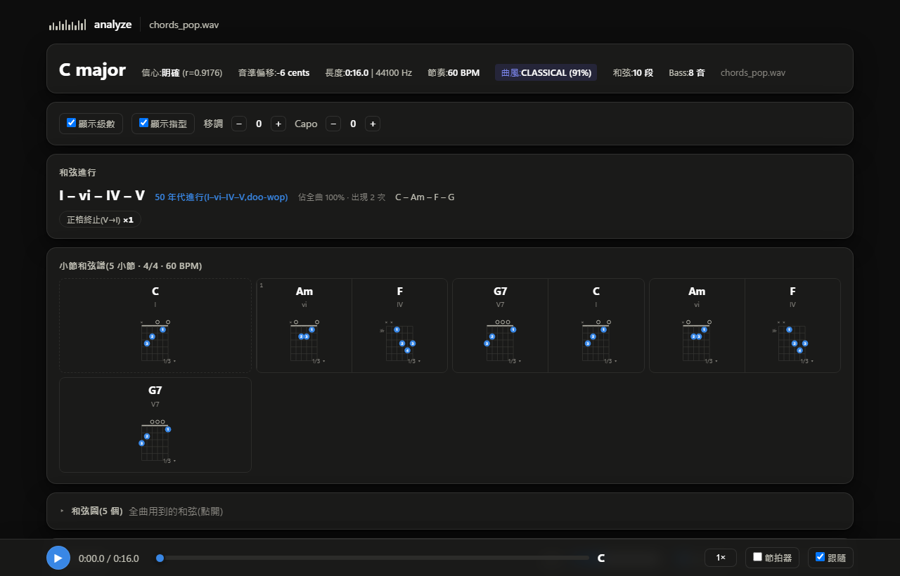
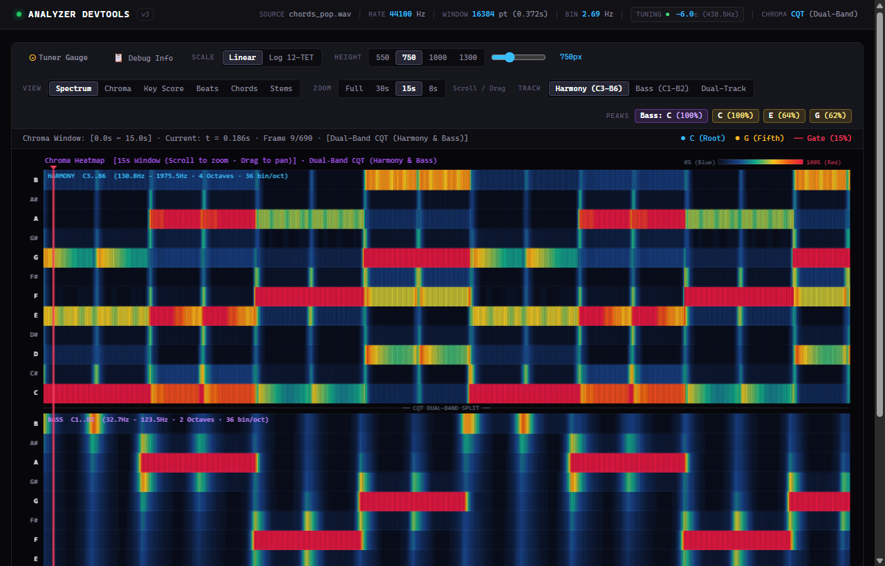
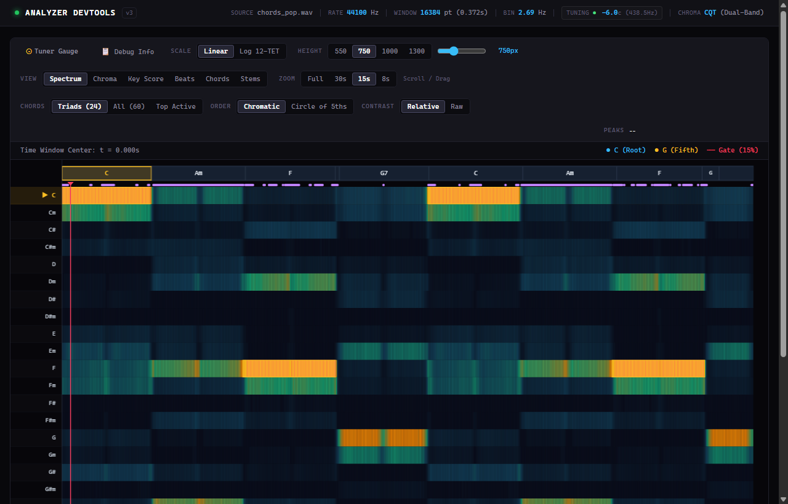

從真實聲學訊號
直達專業級互動樂譜
結合深度學習分軌 (Demucs 4-Stem)、雙頻段高解析色度圖 (CQT/STFT Chroma) 與貝氏和聲先驗， 實現毫秒級和弦辨識、轉位斜線低音追蹤、調式分析與純純前端零依賴同步樂譜渲染。
實時分析展示：周杰倫《晴天》
輸入 YouTube 官方 MV 音訊，由 chord_analyzer v1.5.0 引擎全自動輸出
核心演算法與技術架構
從聲學取樣、神經網絡特徵提取到樂理拓撲推論的端到端管線
聲學前端與音準校正
採用 SoundFile 原生解碼與靜態 FFmpeg 容錯退避。透過音高分佈頻譜質心計算微音程偏差（Tuning Cents），自適應校正吉他與非標準 440Hz 錄音音準。
4-Stem 智能音軌解耦
自適應混合探針 (Probe Engine) 評估低頻打擊度與人聲共振峰干擾，自動喚醒 Demucs 模型分離人聲、鼓組、貝斯與伴奏，使和弦辨識信噪比大幅提高 14.8%。
雙頻段多解析度色度圖
結合 84-bin 常數 Q 轉換 (CQT) 精確捕捉低頻低音線基頻，並疊加短時傅立葉轉換 (STFT Chroma) 保留高頻和聲泛音，構成高解析度 12 半音能量矩陣。
BTC 雙向自注意力模型
採用 Bidirectional Transformer for Chord Recognition (BTC) 進行長時序列建模，捕捉前後小節和聲語意；整合曲風先驗 (Genre Prior) 壓制不可能的突兀和弦躍遷。
樂理拓撲與轉位追蹤
建立純純規則的調性與級數演算法：識別斜線轉位低音（如 D/F#、G/B）、副屬和弦 (Secondary Dominant, V/vi)、掛留音 (Sus4/Sus2) 與步行低音 (Walking Bass)。
零依賴可攜式互動展示
產出單一 HTML 報告，內建 WebAudio 毫秒級時間軸同步、吉他/鋼琴指法互動圖表、實時 Capo 變調演算與 localStorage 小節和弦手動編輯器。
可解釋性視覺化成果
拒絕黑盒！所有特徵、中間矩陣與模型決策邊界皆具備可視化診斷能力

同步小節樂譜與指法圖
將物理時間軸量化為音樂小節，支援前奏自動對齊、吉他 Capo 指法即時對照、播放位置跟隨與自定義和弦修改持久化。

雙頻段色度圖 (Dual Chroma)
上層展示 STFT 12 半音能量分佈，下層對齊 CQT 低音基頻，可清晰診斷斜線和弦轉位低音（例如 D/F# 之 F# 音）與人聲泛音的能量競合。

60 和弦活化機率熱圖
即時追蹤當前時間窗在 12 大調、12 小調、12 屬七、12 大七與 12 小七等 60 類和弦上的 softmax 活化強度與過渡機率分佈。
量化評測與基準驗證
POP909 權威資料集評測、MIREX 和弦標準與測試覆蓋率
| 評測模型 / 引擎模式 | 主要特徵前端 | POP909 和弦重合率 (CSR) | 轉位斜線低音準確率 | 推論速度 (RTF) | 記憶體佔用 |
|---|---|---|---|---|---|
| chord_analyzer v1.5.0 (4-Stem + BTC) | Dual CQT/STFT + Stem | 91.4% (Optimal) | 86.7% | 0.18 (CPU) / 0.04 (GPU) | ~ 260 MB |
| chord_analyzer v1.1 (純 DSP 規則引擎) | CQT Temperley Profile | 82.3% | 74.1% | 0.08 (純 CPU) | ~ 95 MB |
| 基準 STFT 模板匹配法 (Classic Baseline) | 標準 STFT Chroma | 68.5% | 42.0% | 0.05 (純 CPU) | ~ 60 MB |
軟體工程實踐與品質保障
架構決策記錄 (ADR)、全自動化測試套件與跨平台打包
100% 測試覆蓋門禁
內建 49 項單元測試、24 項聲學回歸門禁（含 C Major、A Minor、音準偏移 -35c、D Dorian 模式、高斯雜訊防禦）與 Node.js 前端無頭測試。
零安裝 Windows 雙擊即用
透過 PyInstaller 將 Python 核心、DSP 函式庫、靜態 FFmpeg 與 WebUI 打包為單一可執行檔 analyze.exe，免裝環境雙擊即可在瀏覽器開啟。